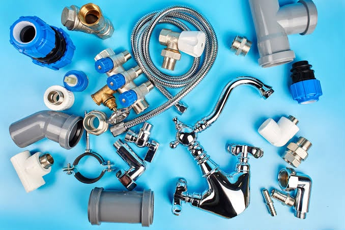
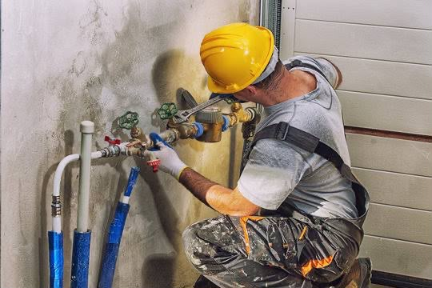

About Gomez Plumbing
Gomez Plumbing was established to provide dependable plumbing services for homes and businesses in our community.
Our experienced team focuses on honest recommendations, quality workmanship and respectful service from start to finish.
Whether you need a quick repair or ongoing plumbing support, we work hard to deliver practical solutions you can rely on.


Our Work
At Gomez Plumbing, we understand that reliable plumbing is important for every home and business. Our team works carefully to identify plumbing problems and provide effective solutions.
We use the right tools and equipment to complete our work professionally while keeping our customers informed throughout the process.